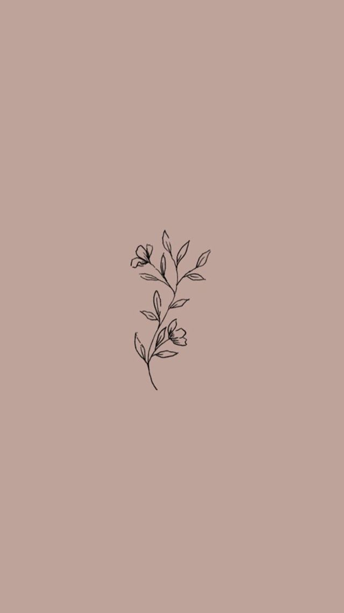
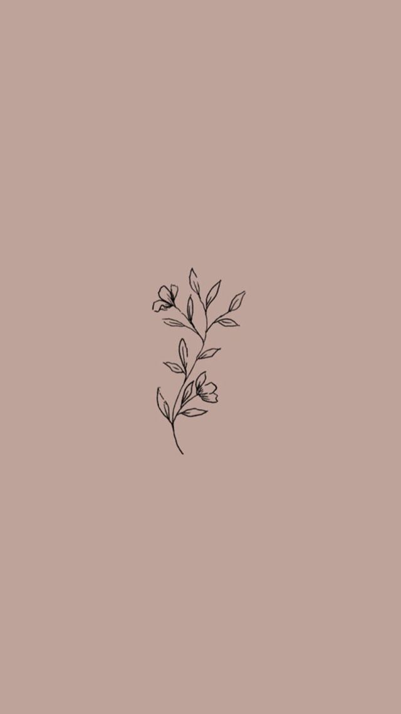
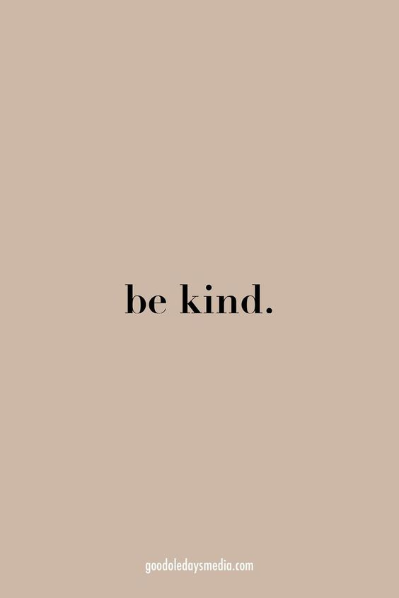
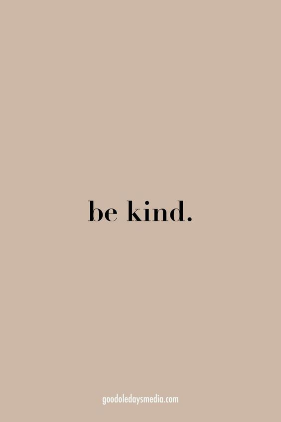
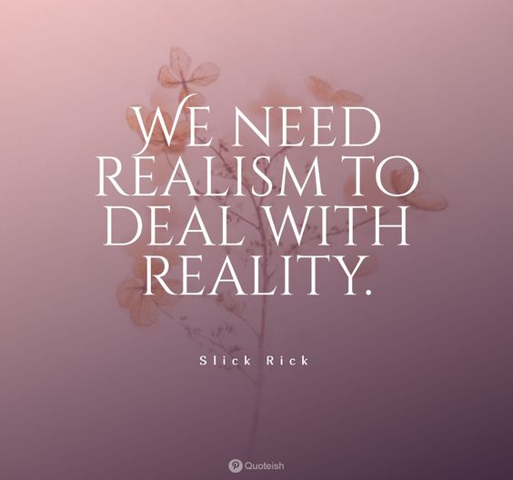
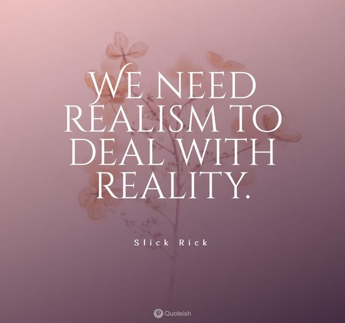
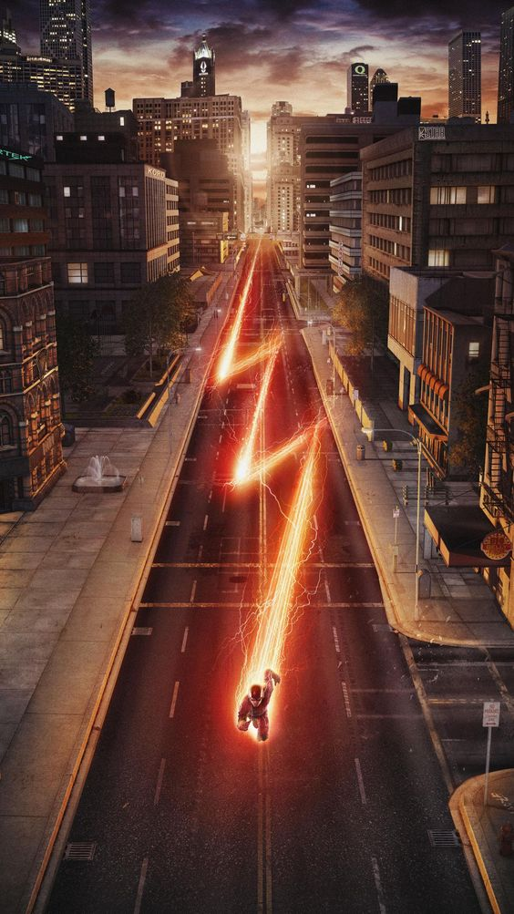
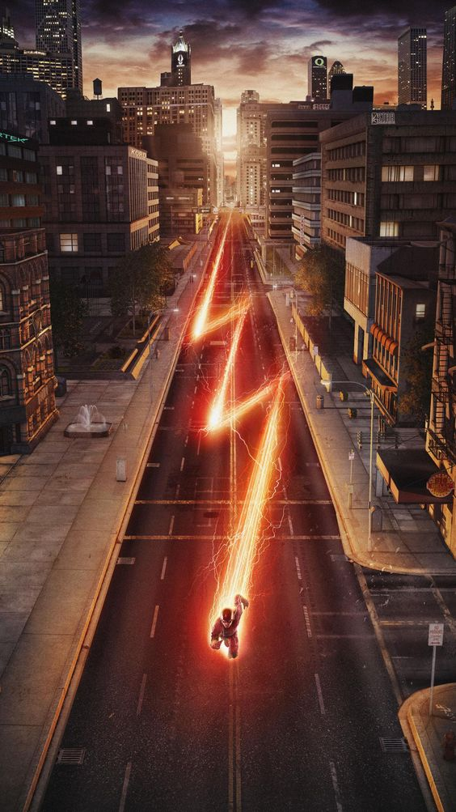
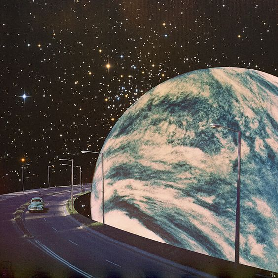
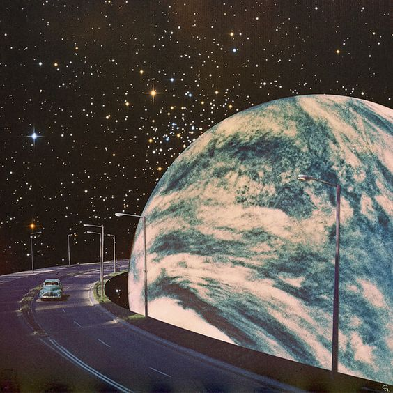

 



 

 

 



It can be lonely at the top. As one of the rarest personality types – and one of the most capable – Architects (INTJs) know this all too well. Rational and quick-witted, Architects pride themselves on their ability to think for themselves, not to mention their uncanny knack for seeing right through phoniness and hypocrisy. But because their minds are never at rest, Architects may struggle to find people who can keep up with their nonstop analysis of everything around them.